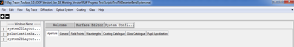
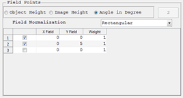
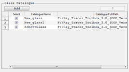

System Configuration Panel
It is part of the main panel of the parent window and contains tabbed windows for entering and editing the system configuration data of an optical system.

In the following section each tabbed windows will be briefly discussed.
1. Aperture
Define system aperture. System aperture can be specified by either Entrance Pupil Diameter or Object Space NA. All other methods of system aperture specifications are left for the future. For objects at finite distance both can be used whereas for infinite objects, the object space numerical aperture is not defined and so it cannot be set in the aperture window.

2. General
Here the general information relating the current optical system can be entered or modified including the units used for the lens and wavelength measurements.

3. Field Points
To define set of field points, which can later be used to analyze the system. Field points can be defined either by specifying the object height or by ray angles. If object heights are used to define the field points, the heights are measured in lens units. Field angles are always in degrees. The angles are measured with respect to the object space z axis and the paraxial entrance pupil position on the object space z axis. Like in Zemax, x field angles and y field angles can be converted to ray direction cosines using the following formulas:
tan (Fx) = l/n
tan (Fy) = m/n
l2+m2+n2 = 1
Where l,m and n are the x,y and z direction cosines.

4. Wavelengths
To define wavelengths which the system can use for different analysis.The weight related to each wavelength values are not functional for current version. And the units of the wavelength specified are in the general tab. Predefined wavelengths can also be selected directly.

5. Coating Catalogue
List of all coating cataloogue used in the optical system. They can be deselected to remove from the used catalogue list. When optical system is saved those only selected ones will be saved as used coating catalogues. A new catalogue can also be added to the list. If the new catalogue added is not in the default catalogue files folder of the toolbox it will be automatically copied to that folder. Only those selected catalogues are cosidered during caoting analysis.

6. Glass Catalogue
List of all glass cataloogue used in the optical system. They can be deselected to remove from the used catalogue list. When optical system is saved those only selected ones will be saved as used glass catalogues. A new catalogue can also be added to the list. If the new catalogue added is not in the default catalogue files folder of the toolbox it will be automatically copied to that folder. Only those selected catalogues are cosidered during glass analysis.

7. Pupil Apodization
It is used to define the pupil apodization to be used in the system to simulate the effect of non-uniform illumination. Currently only uniform and super-gaussian profiles are supported.

Created with the Personal Edition of HelpNDoc: Single source CHM, PDF, DOC and HTML Help creation